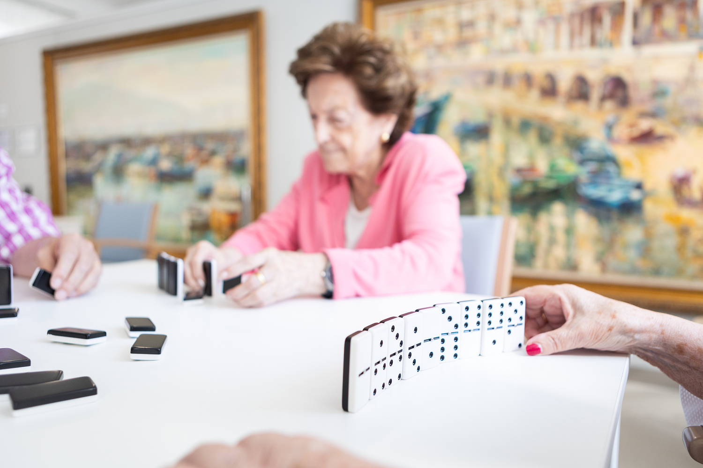
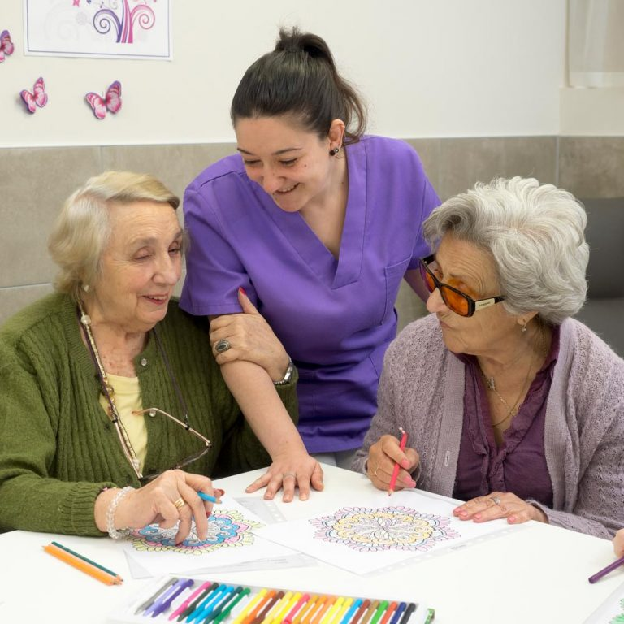

Desde Anarax, te ofrecemos servicios profesionales con un trato humano y centrado en tus necesidades y capacidades. Nuestro compromiso, desde los servicios del centro, es acompañarte para reforzar aquellos aspectos de la vida que precisan de una atención experta. Con ella, queremos hacer crecer tu confianza y autoestima, mediante el empoderamiento para hacer realidad tus objetivos vitales.

